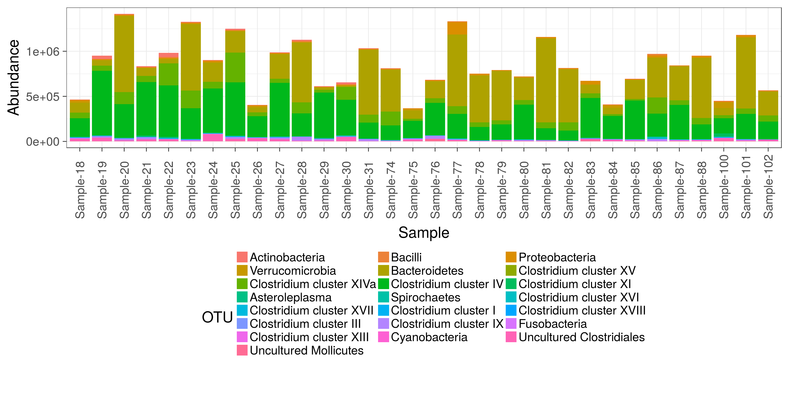
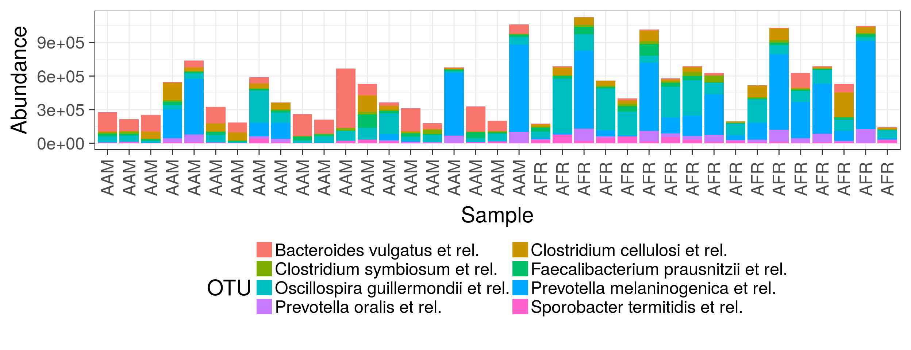
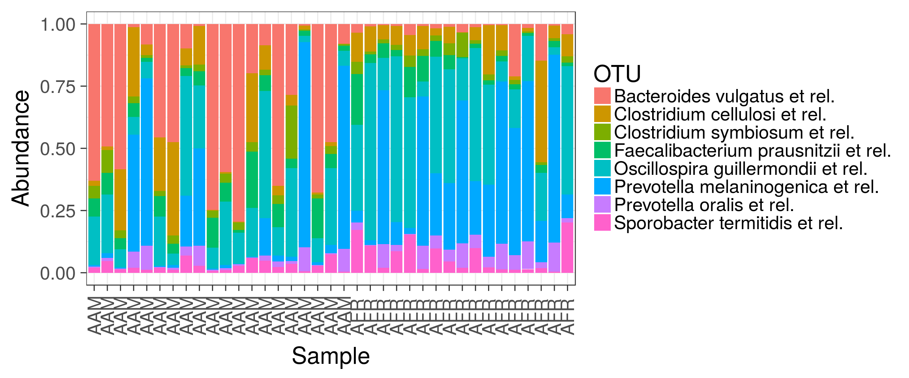
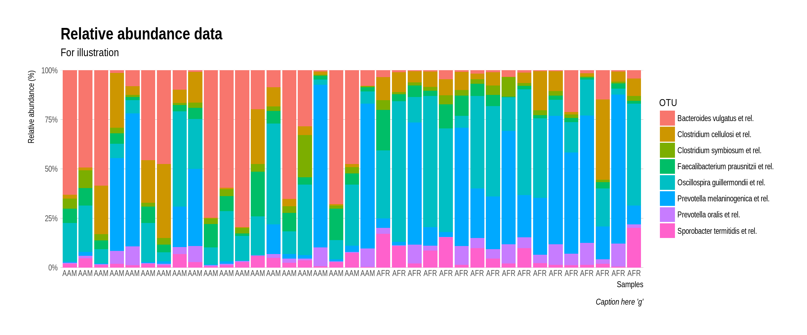
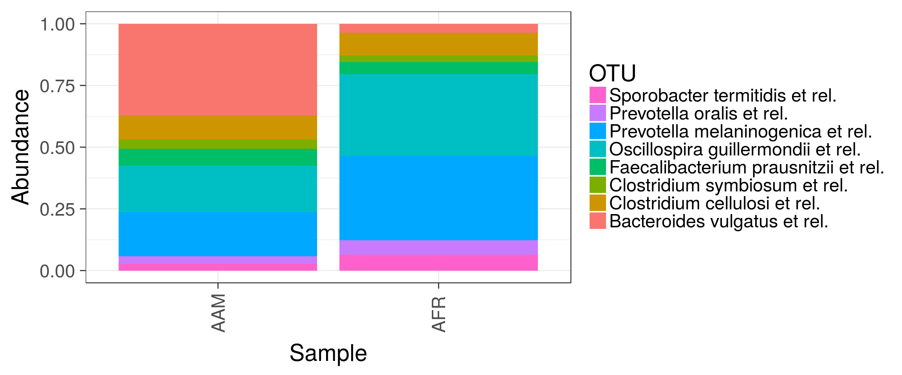
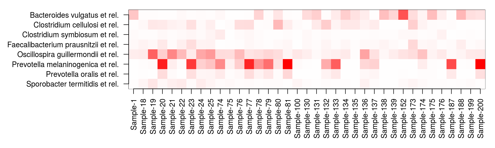
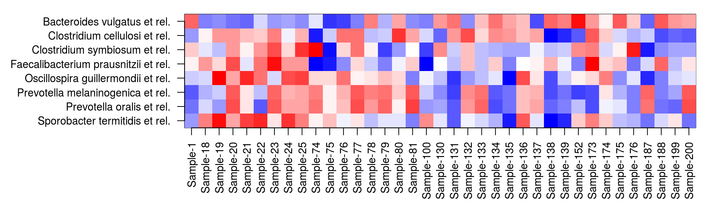
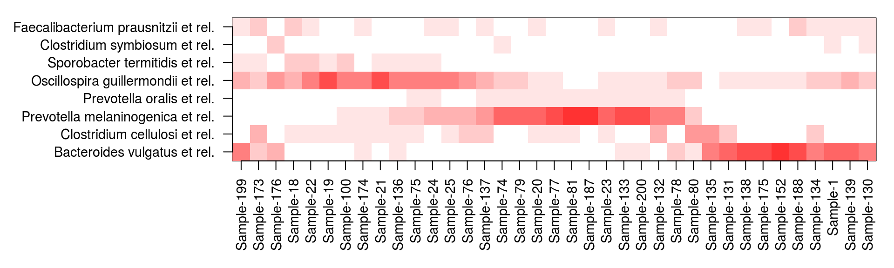
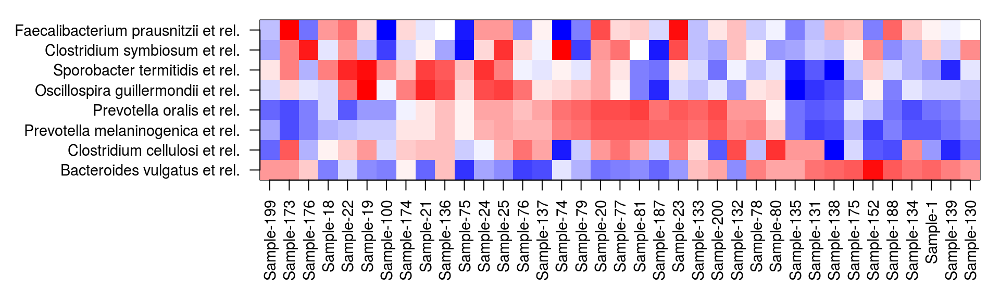

Also see phyloseq barplot examples.
Read example data from a diet swap study:
# Example data
library(microbiome)
data(dietswap)
pseq <- dietswap
# Pick sample subset
library(phyloseq)
pseq2 <- subset_samples(pseq, group == "DI" & nationality == "AFR")Show OTU absolute abundance in each sample. Plot absolute taxon abundances:
library(ggplot2)
theme_set(theme_bw(22)) # Black/white color theme
p <- plot_composition(pseq2, taxonomic.level = "Phylum") +
theme(legend.position = "bottom") +
guides(fill = guide_legend(nrow = 10, byrow = TRUE))
print(p) 
Arrange by sample variable. Focus on the core taxa. Africans have more Prevotella as expected. Absolute counts:
# Limit the analysis on core taxa and specific sample group
pseq2 <- pseq %>%
core(detection = 10^4, prevalence = .5) %>%
subset_samples(group == "DI" & timepoint.within.group == 1)
p <- plot_composition(pseq2,
sample.sort = "nationality", # Sort by nationality
x.label = "nationality") + # Label by nationality
guides(fill = guide_legend(nrow = 5, byrow = TRUE)) +
theme(legend.position = "bottom")
print(p)
Same with compositional (relative) abundances:
p <- plot_composition(pseq2,
sample.sort = "nationality",
x.label = "nationality",
transform = "compositional") +
guides(fill = guide_legend(ncol = 1))
print(p)
# Or try another theme
# from https://github.com/hrbrmstr/hrbrthemes
library(hrbrthemes)
library(gcookbook)
library(tidyverse)## Loading tidyverse: tibble
## Loading tidyverse: tidyr
## Loading tidyverse: readr
## Loading tidyverse: purrr## Conflicts with tidy packages ----------------------------------------------## combine(): dplyr, BiocGenerics, gridExtra
## filter(): dplyr, stats
## lag(): dplyr, stats
## map(): purrr, mclust
## Position(): ggplot2, BiocGenerics, basep2 <- p + scale_y_percent() + labs(x="Samples", y="Relative abundance (%)",
title="Relative abundance data",
subtitle="For illustration",
caption="Caption here 'g'") +
theme_ipsum(grid="Y")
print(p2) 
Averaged by group:
p <- plot_composition(pseq2,
average_by = "nationality", transform = "compositional")
print(p)
Plain heatmap on absolute abundances
theme_set(theme_bw(30))
p <- plot_composition(pseq2, plot.type = "heatmap", mar = c(6, 13, 1, 1))
Heatmap with Z-transformed OTUs
p <- plot_composition(pseq2, plot.type = "heatmap", transform = "Z-OTU", mar = c(6, 13, 1, 1))
Same with relative abundance, samples and OTUs sorted with the neatmap method:
pseq3 <- transform(pseq2, "compositional")
p <- plot_composition(pseq3, plot.type = "heatmap",
sample.sort = "neatmap", otu.sort = "neatmap",
mar = c(6, 13, 1, 1))
Same with Z-transformed, samples and OTUs sorted manually based on compositional data (Z-transformed data has negative values and the sorting method is not yet implemented for that):
sample.sort <- neatsort(pseq3, method = "NMDS", distance = "bray", target = "sites")
otu.sort <- neatsort(pseq3, method = "NMDS", distance = "bray", target = "species")
p <- plot_composition(pseq2, plot.type = "heatmap", transform = "Z-OTU",
sample.sort = sample.sort, otu.sort = otu.sort,
mar = c(6, 13, 1, 1))
## [1] "ade4"
## [1] "compositions"
## [1] "MASS"
## [1] "moments"
## [1] "scales"
## [1] "tgp"
## [1] "WGCNA"
## [1] "diptest"
## [1] "FD"
## [1] "gcookbook"
## [1] "GGally"
## [1] "ggnet"
## [1] "Hmisc"
## [1] "hrbrthemes"
## [1] "igraph"
## [1] "intergraph"
## [1] "limma"
## [1] "lme4"
## [1] "netresponse"
## [1] "network"
## [1] "RColorBrewer"
## [1] "sna"
## [1] "SpiecEasi"
## [1] "tidyverse"
## [1] "viridis"